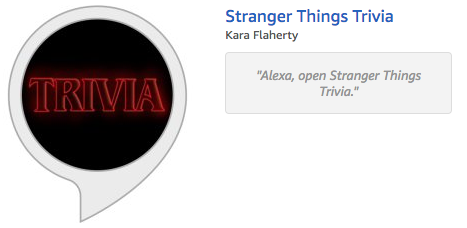

Portfolio: Development
Alexa skill development using Amazon's fact and trivia samples

I started this year with the goal to learn professional web development, and back in January, my curriculum looked sooooooooo long. But here I am, 11 months later, and I'm working on my capstone! Bloc allows you to do pretty much anything you want for your capstone, and I had several ideas in mind, including a dog activity tracker mobile app and a bullet journaling web app (both things I would totally use on a daily basis). However, the mentor I chose for my capstone is also an Amazon Alexa expert, and he encouraged me to give Alexa skill development a try.
At first, I was kind of like, "meh," about Alexa development. After all, I didn't own any Alexa devices (at least not at the time — my dad has since given me an Echo Dot. Thanks, Dad!), and I didn't really have any ideas of what to build. But eventually, after researching what Alexa skill development entails and what kinds of skills are already available, I changed my mind and accepted the challenge. After all, this was an opportunity to better hone my JavaScript knowledge and work with Node.js, which had been living on my to-research-at-a-later-time list for months.
Reading about Alexa skill development, I learned there are actually a lot of opportunities to put your skill to work for you, which is a bonus. Plus, when I mentioned to a few other developers at a meetup that I was working on Alexa skills, they were all really excited for me and said they wanted to learn Alexa, too. So not only are there tons of resources online, but there's a growing Alexa community as well. Consider me motivated.
Starting with the Alexa fact sample
The first thing my mentor told me to do was to go to github.com/alexa and look through the various skill samples. As you can see, there are a bunch to choose from: fact, trivia, quiz game, how-to, RSS/Atom feed, decision tree, high-low game, calendar reader, city guide, etc.
The first one to stand out to me was the fact skill, but not so much for its fact capabilities. Instead, I imagined it as a simple skill to spit out a line, and I knew exactly what I wanted it do: pull from a list of my favorite Kurt Vonnegut quotes. Alexa is pretty smart, so you can say, "Alexa, tell me a quote from Kurt Vonnegut," and she'll read off a quote. This is part of her artificial intelligence. However, there are so many quotes from the late, great Vonnegut, how do you know you're going to get one of the best ones?
That's where my skill comes in — by saying, "Alexa, open Kurt Vonnegut Quotes," she'll tell you a quote from my own curated list.
"We are what we pretend to be, so we must be careful about what we pretend to be."
The tutorial for the Alexa fact sample was incredibly easy, and I had my skill published in less than a week. Needless to say, this is a great intro to Alexa skill development, and I'm glad it was my first because it really made me feel like a champ. Plus, seeing your name published with an Alexa skill in the Amazon marketplace is super gratifying!
► See Kurt Vonnegut Quotes live on the Amazon marketplace: Alexa Skills: Kurt Vonnegut Quotes
► See the code behind Kurt Vonnegut Quotes: Github
Stuggling with the Alexa trivia sample
After breezing through the fact sample, I figured the trivia sample would be just as simple. I was wrong. First of all, the tutorial could use a bit of help, especially when it comes to creating the Lambda function. Second, it doesn't even touch upon a lot of things that will eventually make your skill fail certification tests, like missing intents and card rendering issues. Third, there's a lot more to deal with here — unlike the fact skill, a trivia skill requires a conversation of sorts, including keeping track of user input. I didn't know it at first, but I was in over my head.
With the feedback I got from each failed Amazon submission, my mentor's guidance, and a world of resources at my fingertips, I wasn't in over my head for too long, though. And with the fact that my goal was to develop a Stranger Things trivia game after having binged the second season, I was motivated to ship ASAP while the topic was still hot.
Issue #1: Lambda function files
I spent a lot of time editing the sample code in question.js with my own trivia questions, but it seemed impossible to correctly zip my files in such a way that Amazon Web Servces could work with them. My mentor encouraged me to do as much work from the command line as possible rather than using the interface of the Lambda console and developer portals on Amazon. I successfully deployed my skill to the developer portal, but the Lambda function was a no-go. I tried several different approaches based on what I could find online regarding their preferred zip file structures, yet was left with reindeer trivia (the default) on good days, endpoint errors on bad days.
Eventually, I fixed this by creating a new Lambda function with the trivia blueprint instead of creating it from scratch. Then, where you can edit the Lambda code, I combined my own question.js with index.js and overwrote the blueprint's code. Reindeer questions might still be living in there somewhere, but at least they're disconnected.
Before:
const questions = require('./question');
const languageString = {
'en': {
'translation': {
'QUESTIONS': questions['QUESTIONS_EN_US'],
},
},
};
After:
const languageString = {
'en-US': {
'translation': {
'QUESTIONS': [
{
'Before getting the title \'Stranger Things,\' what was the series originally going to be called?': [
'Montauk',
'The Nether',
'Time Skip',
'The Weirdo on Maple Street',
],
},
/* 49 more questions */
],
},
},
};
Issue #2: Missing intents
Following the tutorial, I created a GetAnswerIntent and DontKnowIntent, named exactly as instructed. However, when I tried to test my skill by saying my trivia answer, Alexa had no idea what I was trying to do. I fiddled with a ton of things and tried to find people online with the same issue, but for the life of me, I could not figure it out.
Finally, I scheduled an extra session with my mentor, Mark. Being that he is an Alexa expert, this was his time to shine, and he definitely did! At first, he was just as stumped as I was, but he had me read through the JSON outputs and compare them to what was happening in my Lambda code. In the 10 minutes I spent with him debugging this issue, I learned what would have taken hours to learn on my own. What we discovered is that the Amazon tutorial's sample Lambda code has an AnswerIntent, NOT a GetAnswerIntent, and the mismatch resulted in a miscommunication. Ugh! It was as simple as updating the Lambda code with GetAnswerIntent.
Through this, we also discovered that the tutorial was also missing a much-needed YesIntent and NoIntent. Later, after seeing how to test for these intents and add them, I was able to fix yet another bug by adding the StartOverIntent. All of these are built-in intents that are required for a trivia skill to work but are completely ignored by the tutorial, which is too bad for anyone depending on the tutorial alone, but it's a great learning experience for truly understanding how the intents connect between the interaction model and the Lambda function.
Issue #3: Visible SSML tags
SSML, short for speech synthesis markup language, is integral to helping Alexa sounds less like a robot and more like a human. It's also required for pronouncing words like "demogorgon" correctly and not saying "Avenue club" in place of "AV club."
Amazon has a fantastic resource for this, which I was excited to use in my skill. However, to my dismay, including SSML tags in my skill meant that they were both spoken by Alexa (great!) and written on the home cards (not so great).
A bit of research led me to the idea of stripping the SSML tags out of the cards using regex, and since I have a weird obsession with regex, I was totally down for it. But how? And where? I was stumped yet again.
My mentor offered to meet again to go over it, but unfortunately, I was working overtime, so my schedule was all weird, leaving me to figure it out on my own. I decided that maybe learning the basics of Alexa skill development couldn't hurt, so I took the Intro to Alexa course on Codecademy. It was super basic and didn't really go into SSML or the home cards, but it did clarify a lot of concepts when it comes to rendering Alexa's output, which proved incredibly helpful.
Additionally, I read through the README.md file of the Alexa Skills Kit repo (which I didn't install or use, but that is one hell of an informative README.md if I do say so myself).
Combining everything together, I was able to write the correct code in the right place to strip the SSML tags from the home cards, which felt like a huge win! It was as simple as this:
// First, do a ctrl + F for "card," you'll see it show up twice in the trivia sample's Lambda code.
// Put this variable before the card gets rendered:
var regex = /(<([^>]+)>)/ig;
// Then, where the card gets rendered, add .replace(regex, "") like so:
this.response.cardRenderer(this.t('GAME_NAME'), repromptText.replace(regex, ""));
Issue #4: Missing home cards
Since I was messing around with the SSML in the home cards, I realized I had a problem: only the first question's home card showed up, but the rest were empty. With my new knowledge of understanding Alexa responses and being able to debug issues, I was able to follow the flow of my code through a game and see what each line was doing and why. As I mentioned in the SSML code above, the trivia sample renders cards in two places. The first is in startStateHandlers, and the second is in the handleUserGuess function, which gets called in triviaStateHandlers.
The first question is actually attached to the welcome message, which gets rendered in the startStateHandlers, so I knew the code for the home card was ok there. Comparing the card code that gets called for triviaStateHandlers, I could see one small difference. See if you can spot it:
startStateHandlers → this.response.cardRenderer(this.t('GAME_NAME'), repromptText.replace(regex, ""));
triviaStateHandlers → this.response.cardRenderer(this.t('GAME_NAME', repromptText.replace(regex, "")));
One parenthesis. That's all it takes. By closing the 'GAME_NAME' parentheses to separate 'GAME_NAME' and repromptText, and of course removing a parenthsis from the end of the line, the home cards rendered correctly. This is an error in the sample code that needs to be fixed, otherwise your skill will not pass certification.
It's finally alive!
Hours after writing this post, my skill passed certification! Take a look at this beauty.
► See Stranger Things Trivia live on the Amazon marketplace: Alexa Skills: Stranger Things Trivia
► See the code behind Stranger Things Trivia: Github
Update
Since cloning the Alexa trivia sample, someone else already fixed the GetAnswerIntent/AnswerIntent issue between the interaction model and the Lambda function. However, the tutorial instructions were still not updated, and the other issues I ran into with missing intents and home card rendering errors remained. For the first time ever, I decided to fork the alexa/skill-sample-nodejs-trivia repository, fix the errors, and push my changes. Yes, this project led me to my first open-source collaboration! Whether or not they accept my changes is still to be determined, but you can see my pull request here: karakarakaraff:updates-to-pass-certification
Updated #2
Two months after going live, Stranger Things Trivia hit 10,000 unique customers! It also had a hugely successful December! I credit this with the Echo Dot being one of the top Black Friday sellers, and as a result, a bunch of people received Echo Dots for Christmas. I'm curious if the spike in activity seen for my skill translates across most skills, or if that's just really, really good luck for me. Regardless, that kind of activity was enough to earn a free Echo Dot for myself and a $300 check from Amazon! Those kinds of developer perks will definitely keep me interested in continuing to create Alexa skills as I come up with more ideas.
Alexa Skills: GitHub
Date: November 2017
Project Checklist: JavaScript, Node.js, SSML, regex, AWS Lambda, ASK-CLI, ASK developer portal
Built for Bloc.io